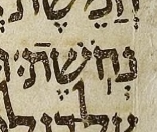

Alternatively, you can click on an individual Hebrew word to toggle only that word's spacing.
← Back to Meteg after the stress.
In the Leningrad Codex, the last word of 1 Sam. 17:5 has a meteg after its silluq.
That meteg is surprising, but we deem the silluq-meteg reading less surprising than the meteg-silluq reading. In silluq-meteg order, only the presence of the meteg is surprising; in meteg-silluq order, the location of the stress is surprising. We find a meteg surprise far more likely than a stress surprise.
This surprising meteg is correctly recorded in BHS, and so in WLC and in UXLC, which derive from it:
| MAM | נְחֹֽשֶׁת׃ |
| BHS | נְחֹֽשֶֽׁת׃ |
A meteg after a silluq is hard to identify in Unicode, since the two marks share one codepoint.
As one would expect, the Aleppo Codex has this word with no meteg after the silluq:
